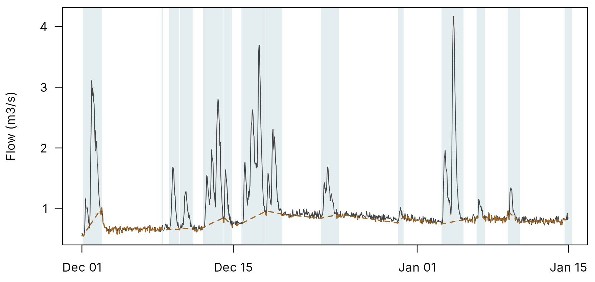
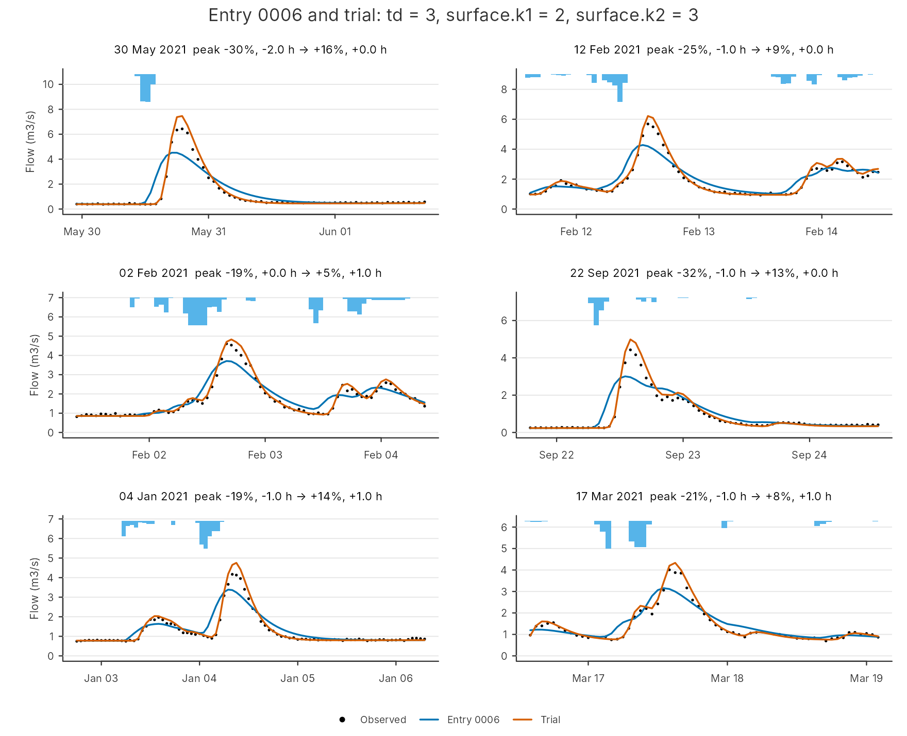
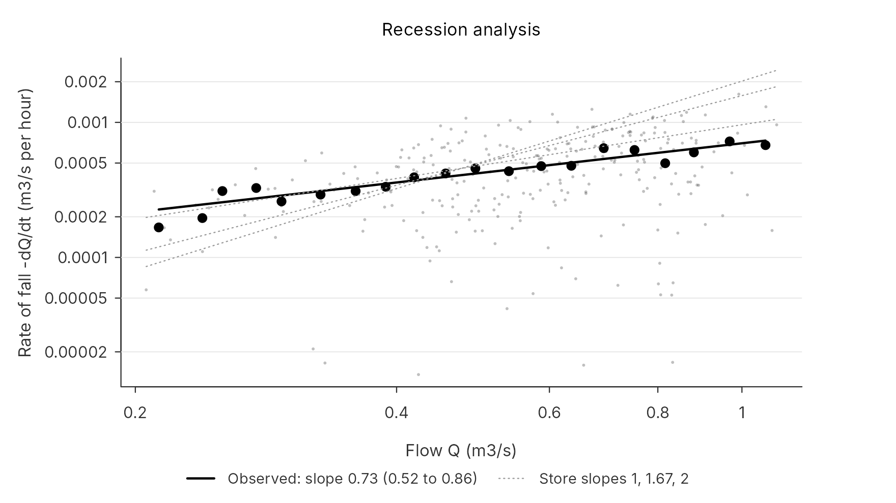

A model built for flood warning is judged by its floods: whether the peaks come out the right size and at the right time. A calibration is usually judged by something else, a single score over the whole record. The two can disagree badly. This article explains why, and walks through the tools in pdmS7 that bring the floods back into view:
- Finding the events in the record, and setting aside the ones not to trust.
- Checking a calibration for the warning signs a good score hides.
- Calibrating for events, so that the search itself cares about the peaks.
- Looking at the events yourself, and adjusting the model by eye, with every change logged.
- Asking whether the structure is right, and what the record can and cannot say about it.
It is written for hydrologists rather than programmers: the code is there to show what is run, but the text stands on its own. The example is a made-up catchment, so the truth is known and every claim can be checked against it.
The example catchment
The catchment is 40 km2, with three years of hourly rain and flow. Its true model responds quickly, with surface stores of 2 and 3 hours, and delays its outflow by 3 hours. The flow is measured with a small random error, as a gauge would.
rain <- synthetic_rain("2019-10-01", years = 3, dt = 1, seed = 21)
forcing <- data.frame(time = rain$time, rain = rain$rain, pet = rain$pet)
truth <- pdm_presets("standard")
truth$area_km2 <- 40
truth$surface$k1 <- 2
truth$surface$k2 <- 3
truth$td <- 3
truth$recharge$kg <- 1500
model <- pdm_from_config(truth)
set.seed(3)
observed <- run_pdm(model, forcing, initial_state_from_flow(model, 0.6, 0.7))$output$q_m3s *
exp(stats::rnorm(nrow(forcing), 0, 0.04))The calibration is kept in a project, as a real one would be: the first year warms the model up, the second is for calibration, and the third, which no calibration sees, is for validation.
options(pdmS7.user = "A Hydrologist", pdmS7.role = "custodian")
project <- file.path(tempdir(), "example-brook")
unlink(project, recursive = TRUE)
start_calibration_project(project, "Example Brook", "00001", "Floods article", 40,
"An Owner", "A Steward")
register_data(project, forcing, observed,
calibration = c("2020-10-01", "2021-09-30 23:00"),
validation = c("2021-10-01", "2022-09-30 23:00"), wettest_years = 0)
start <- pdm_presets("standard")
start$area_km2 <- 40
structure <- select_structure(project, start, "Standard PDM to start from")Why a good score can hide bad floods
The usual calibration fits the model in three stages: first the water balance and slow flows, then the fast response, then everything together. Each is scored by the Nash-Sutcliffe efficiency (NSE), which compares the squared errors with the variance of the flow. A perfect model scores 1.
plain <- log_staged_calibration(project, structure$id, "The standard three stages.",
starts = 2, seed = 1, control = list(maxit = 30))
plain_fit <- plain[[length(plain)]]
propose_candidate(project, plain_fit$id, "Standard stages.")
validate_candidate(project, "Validation year.")
plain_checks <- calibration_checks(project, top = 10)The result scores 0.91. By most standards that is a good calibration. Yet on the ten largest floods of the validation year, the median peak is 22% too low and comes 1.5 hours early, and only 1 of the ten peaks lies within 20% of what was measured.
How can both be true? NSE counts every hour equally. In a year there are 8,760 hours, and a flood peak occupies a handful of them. The long recessions and quiet spells between storms make up almost all of the score. A model can get those right, put every peak a little out in time and well short, and still score 0.9.
There is a second, quieter problem. The true model delays its outflow by 3 hours, but the standard stages hold the time delay at zero. Unable to move the peaks later, the search did the next best thing: it slowed both surface stores, to 4.49 hours each, so the flood arrives later but spread out and lower. The parameters have been bent to make up for something the search could not change. They no longer describe the catchment, and they will mislead anyone who reads them as if they did.
Finding the events
To judge a model on its floods, first find them. Doing it by hand is
slow and inconsistent across hydrologists, and impossible across
hundreds of catchments. find_events() does
it objectively, with the method of Giani and others (2022). It needs
only rain and flow.
It works in three steps:
- The catchment’s response time. It estimates how long, typically, flow takes to answer rain. This sets the scale on which a burst of rain counts as one storm.
- Rain and flow windows. For each storm it marks the rain window, from the first rain to the last, and the flow window, from where the flow starts to rise to where it has fallen back.
- A baseflow line. It draws a line joining the start and end points of every event. Flow above the line is the event’s quick flow; flow below it is baseflow, the river’s slow background supply.
events <- find_events(forcing$rain, observed, forcing$time, dt = 1, area_km2 = 40)
nrow(events)
#> [1] 303
attr(events, "response")$response_h
#> [1] 6
shown <- which(forcing$time >= as.POSIXct("2020-12-01", tz = "UTC") &
forcing$time < as.POSIXct("2021-01-15", tz = "UTC"))
par(mar = c(2.5, 4.2, 0.5, 0.5))
plot(forcing$time[shown], observed[shown], type = "n", xlab = "", ylab = "Flow (m3/s)", las = 1)
inside <- events[events$flow_start %in% shown, ]
for (i in seq_len(nrow(inside))) {
rect(forcing$time[inside$flow_start[i]], 0, forcing$time[inside$flow_end[i]], 1e3,
col = adjustcolor(pal[["blue"]], 0.12), border = NA)
}
lines(forcing$time[shown], observed[shown], col = pal[["dark"]])
lines(forcing$time[shown], attr(events, "baseflow")[shown], col = pal[["orange"]], lty = 2,
lwd = 1.5)
Part of the calibration year. Shaded: the flow windows of the events found. Dashed: the baseflow line beneath them.
Setting aside the events not to trust
Not every event deserves equal weight. A hydrologist calibrating by
eye ignores some without thinking: a “flood” that is only a ripple on a
high baseflow, a storm the rain gauges plainly missed, a hydrograph with
half its data gone. The optimiser has no such instinct. screen_events()
supplies it, with four flags:
| Flag | What it means | Why it matters |
|---|---|---|
| Small rise | The peak rises less than a set share (20% by default) above the baseflow under it | On a high baseflow, a few percent of noise moves such a peak by hours; its size and timing say little |
| Quick flow above rain | More water ran off quickly than fell as rain | The rain record must be wrong for this event |
| Gaps | More than a tenth of the flow window is missing | The peak may be in the gap |
| Above the gauging | The peak is higher than any flow ever gauged | The rating is extrapolated, so the size is uncertain; the timing is still sound |
The first three leave an event out of the scores; the last only flags it, because the largest floods are usually the ones that matter most, and a rating that gets their size wrong still gets their order and timing right.
Every test works on the flow above the baseflow line, never on total flow. That matters in groundwater-fed catchments, where a high, steady baseflow would otherwise count as runoff and make every event look wetter than its rain, or hide genuine rises.
screened <- screen_events(events, observed)
table(ifelse(screened$flags == "", "kept, no flags", screened$flags))
#>
#> kept, no flags small_rise
#> 272 31Every event set aside here is a small rise: real enough, but too small on the baseflow beneath it to judge a peak by.
Checking a calibration
Before accepting any calibration, two questions are worth more than
its score. calibration_checks()
answers both.
Did any parameter end at the edge of its search range? A parameter that runs into the limit it was allowed is usually being pushed there to make up for something the structure cannot do. It has stopped describing the catchment. This is the single clearest warning sign in automatic calibration. A lower limit of zero, such as no time delay, is a natural floor rather than a limit someone chose, and is not flagged.
How does the model do on the largest events in each window? For the ten largest events in the calibration year, the validation year and any years outside both, it gives the median peak error, the median timing error, how many peaks fall within 20% of the measured, and the median NSE within each event.
plain_checks$parameters[, c("path", "value", "lower", "upper", "at_bound")]
#> path value lower upper at_bound
#> 1 fc 9.941589e-01 6e-01 1.6e+00 <NA>
#> 2 distribution.cmax 3.243278e+02 2e+01 8.0e+02 <NA>
#> 3 distribution.b 5.504882e-01 5e-02 2.0e+00 <NA>
#> 4 recharge.kg 1.454274e+03 1e+00 5.0e+03 <NA>
#> 5 surface.k1 4.492965e+00 5e-01 7.2e+01 <NA>
#> 6 surface.k2 4.492965e+00 5e-01 7.2e+01 <NA>
#> 7 groundwater.kb 3.927410e+04 1e+02 1.0e+06 <NA>
plain_checks$summary
#> period events median_peak_error median_timing_error_h
#> 1 calibration 10 -0.2160157 -1.0
#> 2 validation 10 -0.2236472 -1.5
#> 3 outside 10 -0.2815621 -1.0
#> share_peak_within_20pct median_event_nse screened_out
#> 1 0.4 0.7787168 13
#> 2 0.1 0.8091068 10
#> 3 0.0 0.7519518 8Here no parameter is at a bound, so the first check passes. The second fails plainly: peaks 22% low and early in both years. A good score, a clean set of parameters, and a model that is wrong where it matters. Only the event check catches it.
In a real calibration of a 37 km2 catchment, the same checks caught a worse case: an NSE of 0.90 over nine years, three of seven parameters pressed against their limits, and the largest flood 47% too low and 16 hours late. The search had shut off the groundwater path and routed every flood through the slow stores.
Calibrating for events
The checks find the problem. The remedy is to let the search care
about the floods. pdm_stages(events = TRUE) adds a fourth
stage after the usual three.
What it changes. Only the parts of the model that
shape a flood: the two surface stores, the store shape b
that sets how fast runoff responds to wetting, and the time delay
td, searched from 0 to 6 hours. The soil and groundwater
stores stay as the first three stages left them, so the water balance,
already settled, is not disturbed.
What it aims at. The largest half of the calibration events, after screening, scored on three things at once:
- How well each event’s hydrograph matches: an NSE pooled over the events, where each event is compared with its own average flow, so the long quiet spells between floods no longer count;
- How far each peak is off, as a share of the measured peak;
- How far each peak is out in time, measured in units of the catchment’s response time, so that an hour matters more in a fast catchment than a slow one.
The first counts fully and the other two half each, by default.
How it searches. The timing part changes in whole steps: a peak is either one hour late or two, never 1.3. A search that feels for the slope of the ground finds no slope on a staircase, so this stage uses dynamically dimensioned search (DDS), which tries points instead.
stages <- pdm_stages(start, events = TRUE, event_budget = 150)
with_events <- log_staged_calibration(project, structure$id, "Stages with an events stage.",
stages = stages, starts = 2, seed = 1,
control = list(maxit = 30))
event_fit <- with_events[[length(with_events)]]
propose_candidate(project, event_fit$id, "Events stage.")
validate_candidate(project, "Validation year.")
event_checks <- calibration_checks(project, top = 10)
fitted <- read_entry(project, event_fit$id)$configuration
val <- function(chk) chk$summary[chk$summary$period == "validation", ]
data.frame(
calibration = c("standard stages", "with the events stage"),
nse = c(plain_nse, read_entry(project, event_fit$id)$scores$nse),
median_peak_error = c(val(plain_checks)$median_peak_error,
val(event_checks)$median_peak_error),
median_timing_error_h = c(val(plain_checks)$median_timing_error_h,
val(event_checks)$median_timing_error_h),
peaks_within_20pct = c(val(plain_checks)$share_peak_within_20pct,
val(event_checks)$share_peak_within_20pct),
time_delay_h = c(0, fitted$td)
)
#> calibration nse median_peak_error median_timing_error_h
#> 1 standard stages 0.9086598 -0.2236472 -1.5
#> 2 with the events stage 0.9937928 0.0109982 0.0
#> peaks_within_20pct time_delay_h
#> 1 0.1 0.000000
#> 2 1.0 3.008451The events stage found a time delay of 3.01 hours, against a true 3. With the delay free to do its job, the surface stores no longer need to stretch, and the peaks in the validation year, which the calibration never saw, come out right in size and timing. The overall NSE rose too. The two aims were never really in conflict here; the standard stages simply could not reach the one parameter that mattered.
Real catchments will rarely be this tidy. If the structure cannot produce the floods at all, no objective will make it, and the events stage will then show the problem more starkly rather than hide it. That is still worth knowing.
Two more options belong here.
pdm_stages(thresholds = ...) adds a score for crossing the
flood warning flows at the right times to the last stage: it rewards
issuing warnings when the river does cross them, and not otherwise. And
every stage, including this one, is logged in the project, with what it
searched and what it found.
Looking at the events yourself
Scores summarise; they do not show. A hydrologist learns most by looking at the floods, changing something, and looking again. The events workbench makes that fast enough to be natural, and keeps a record of it.
event_workbench()
gathers a run’s largest events, ten unless you choose another number.
workbench_try() reruns them with some parameters changed,
and plot_workbench() draws them before (blue) and after
(vermillion), each with its peak and timing errors in its title. Here
the standard calibration is given the time delay it lacked:
wb <- event_workbench(project, entry = plain_fit$id, n = 6)
wb
#> Events workbench: 6 largest events in the calibration window, from entry 0006
#> Median peak error -23%, timing -1.0 h, event NSE 0.77
fixed <- workbench_try(wb, c(td = 3, surface.k1 = 2, surface.k2 = 3))
plot_workbench(wb, fixed)
The six largest calibration events of the standard calibration (blue), and the same with a 3-hour delay and faster stores (vermillion). Black dots: observed. Bars at the top: rain.
The timing is now right, but the peaks overshoot a little. The other
parameters were fitted around the old, slow stores, and changing the
stores alone leaves them out of step. That is why the events stage
refits the stores, b and the delay together, and why the
workbench is for looking and adjusting by eye, not for replacing the
search.
Why it is quick. Rerunning three years of hourly
data takes a fraction of a second, but a 16-year record at 15 minutes
takes longer, and dragging a slider calls for an answer at once. The
workbench runs the record once and saves the state of the model just
before each event: how full each store was. A change to the surface
stores or the time delay then reruns only the events, each from its
saved state. Each rerun starts a little before its event, long enough
for the fast stores to settle to the new settings, and the result is
identical to rerunning the whole record. A change that reaches the soil
store, such as b, changes the state before every event, so
the workbench reruns the whole record instead.
In the app. The Events tab of calibration_app()
puts this on sliders: choose how many events to show and from which
year, move the surface stores, the time delay or b, and the
events redraw. When you have a setting you believe, Save as
trial writes it to the project log with your verdict and your
reasons, exactly as a trial on the main Trial tab is written. A reviewer
later sees what you changed, what it did, and why you kept it.
Is the structure right?
Calibration tunes the numbers inside a structure. Sometimes the structure itself is the problem: the shape of the soil store, the way groundwater is recharged, or the way it drains. pdmS7 offers several of each. Choosing among them raises a harder question than tuning: can the record tell them apart at all?
Recessions: how the river empties
Between storms, once the fast stores have drained, the river is fed
by groundwater alone, and the way the flow falls says something about
the groundwater store. Plot how fast the flow falls against how high it
is, both on log scales, and the points lie along a line. In theory its
slope is 1 for a linear store, 1.67 for the standard cubic store and 2
for an exponential one. recession_analysis()
measures it.
recession <- recession_analysis(observed, forcing$rain, dt = 1, time = forcing$time,
boot = 100)
recession
#> Recession slope 0.73 (95% interval 0.52 to 0.86), from 270 points in 57 runs
#> Nearest store: linear. Consistent with the record: none
plot_recession(recession)
How fast the flow falls against how high it is, from dry spells only. Dotted lines: the slopes of the linear, cubic and exponential stores.
The true store here is cubic, yet the measured slope is 0.73, nowhere near 1.67, and consistent with none of the stores. The reason is that recharge does not stop when the rain does. The soil keeps draining into groundwater through every recession, topping it up, so the flow falls more slowly than the store alone would let it. On made-up catchments where recharge did stop between storms, the slope recovered every store correctly; where it did not, every store looked roughly linear.
So the recession plot is a check, not a selector. Its real use is to
set a calibrated model’s recessions beside the record’s
(plot_recession() draws both, and the workbench’s
Check recessions button does it in the app). If the
model’s low flows fall at a different rate from the river’s, they are
right for the wrong reason.
What the record can tell apart
To learn which structural choices a record can actually make, the package was tested on made-up catchments where the true structure is known: each was calibrated with every option, and scored on a year it had not seen.
stores <- read.csv(system.file("extdata", "recession_stores.csv", package = "pdmS7"))
rules <- read.csv(system.file("extdata", "recharge_rules.csv", package = "pdmS7"))
margin <- function(d, groups) {
cases <- split(d, d[groups], drop = TRUE)
vapply(cases, function(x) {
s <- sort(x$val_log_nse, decreasing = TRUE)
s[1] - s[2]
}, numeric(1))
}
found <- function(d, groups) {
cases <- split(d, d[groups], drop = TRUE)
vapply(cases, function(x) x$candidate[which.max(x$val_log_nse)] == x$truth[1], logical(1))
}
data.frame(
choice = c("groundwater store (4 options)", "recharge rule (3 options)"),
catchments = c(length(found(stores, c("truth", "recharge", "seed"))),
length(found(rules, c("truth", "seed")))),
true_option_found = c(sum(found(stores, c("truth", "recharge", "seed"))),
sum(found(rules, c("truth", "seed")))),
typical_winning_margin = c(stats::median(margin(stores, c("truth", "recharge", "seed"))),
stats::median(margin(rules, c("truth", "seed"))))
)
#> choice catchments true_option_found
#> 1 groundwater store (4 options) 16 16
#> 2 recharge rule (3 options) 9 9
#> typical_winning_margin
#> 1 0.003310974
#> 2 0.203029033Both choices were found every time, but the margins tell two different stories. The recharge rule won by a wide margin: a wrong rule changes when groundwater fills, and that shows in every recession and every low flow. The groundwater store won by a hair, a few thousandths of a point. These records came from the very model being fitted, with little noise. Real records carry rain errors and a structure that is never exactly right, and a margin of a few thousandths will not survive them.
The lesson is practical. Test the recharge rule; the record has something to say about it. Do not expect the record to choose the groundwater store, and keep the standard cubic store unless another is clearly better.
Choosing one part at a time
Comparing every combination of soil store, recharge rule and
groundwater store would mean sixty calibrations. recommend_structure()
chooses one part at a time instead, in the order the record can best
answer: recharge first, then the soil store, then the groundwater store.
Each step compares its options on the validation year and follows one
rule:
- Set aside any option that ended with a parameter at the edge of its range.
- Treat every option within a small margin of the best score (0.02 by default) as equally good.
- If the option already in use is among them, keep it: the record cannot justify a change.
- Otherwise take the one whose largest validation floods are closest in size, then the one with fewer parameters.
recommend_structure(project, reasoning = "First choice of structure for Example Brook.")Rule 3 makes it cautious on purpose. Where the record is silent, which for the groundwater store is usual, the standard structure stays, and the note written to the project log says so. A recommendation that changed the structure on a margin of 0.003 would be worse than none.
Putting it together
For a new catchment, a sensible order is:
- Register the data in a project, with calibration and validation years, and the highest gauged flow if you know it.
-
Look at the events with
find_events()andscreen_events(). How many are there, and how many survive screening? If few do, as on a chalk stream, judge the model on its low flows and volumes instead. -
Calibrate in stages, with the events stage if
floods matter:
pdm_stages(events = TRUE), adding warning thresholds if you have them. -
Run the checks:
calibration_checks(). No parameter at a bound, and peaks and timing acceptable in the validation year, before anything else. - Look at the floods in the workbench, adjust by eye where the checks or your knowledge say so, and save what you keep as trials, with reasons.
-
Question the structure if the checks keep failing:
recommend_structure(), with the recession plot as a check on the low flows. - Validate and test, and propose the result for sign-off as usual.
The script for Beggearn Huish follows this order: capped surface stores, the events stage, optional thresholds, and the acceptance checks printed and saved at the end.
What this cannot do
- It cannot fix the rain. If the gauges miss the storm, no model and no calibration will find the flood. Screening sets aside the worst cases; it cannot repair them.
- It cannot fix the rating. A peak above the highest gauging may be wrong in size. The model may be right and the record wrong.
- It cannot make a structure do what it cannot. The events stage and the workbench tune the response; they do not give the model a pathway it lacks.
- The tests are synthetic. The findings on what a record can tell apart come from made-up catchments where the structure was exactly right. They show what is possible at best. Real catchments will tell us how much survives.
Terms
| Term | Meaning here |
|---|---|
| Event | One storm and the flood it produced: a rain window and a flow window |
| Response time | How long the flow typically takes to answer rain |
| Baseflow | The slow background flow, from groundwater; the dashed line under the events |
| Quick flow | Flow above the baseflow line during an event |
| Recession | The fall of the flow after rain stops |
| Bound | The edge of the range a parameter is allowed to search |
| NSE | Nash-Sutcliffe efficiency: 1 is perfect, 0 is no better than the average flow |
| Validation | Scoring on a period the calibration did not see |
References
Brutsaert, W. and Nieber, J. L. (1977). Regionalized drought flow hydrographs from a mature glaciated plateau. Water Resources Research, 13(3), 637-643.
Giani, G., Rico-Ramirez, M. A. and Woods, R. A. (2021). A practical, objective, and robust technique to directly estimate catchment response time. Water Resources Research, 57, e2020WR028201. doi:10.1029/2020WR028201.
Giani, G., Tarasova, L., Woods, R. A. and Rico-Ramirez, M. A. (2022). An objective time-series-analysis method for rainfall-runoff event identification. Water Resources Research, 58, e2021WR031283. doi:10.1029/2021WR031283.
Kirchner, J. W. (2009). Catchments as simple dynamical systems: catchment characterization, rainfall-runoff modeling, and doing hydrology backward. Water Resources Research, 45, W02429. doi:10.1029/2008WR006912.
Tolson, B. A. and Shoemaker, C. A. (2007). Dynamically dimensioned search algorithm for computationally efficient watershed model calibration. Water Resources Research, 43, W01413. doi:10.1029/2005WR004723.